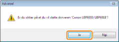
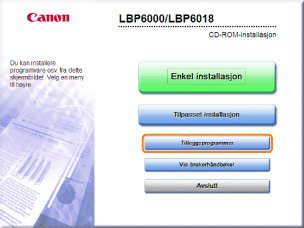
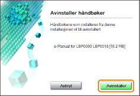

Prosessen med å fjerne skriverdriveren for å gjenopprette datamaskinen til samme tilstand som før skriverdriveren ble installert, kalles som avinstallering. For å avinstallere skriverdriveren, utfør følgende prosedyre.
1
Hvis en USB-kabel er koblet til, skru AV skriveren og datamaskinen og fjern deretter USB-kabelen.
2
Skru på datamaskinen og logg deretter på Windows som en bruker med administrative rettigheter.
3
Lukk følgende filer og programmer dersom de er åpne.
Hjelpefiler
Skriverstatusvindu
Kontrollpanel
Andre programmer
4
Start avinstallasjonsprogrammet.
Fra [Start]-menyen, velg [Alle programmer] eller [Programmer] → [Avinstallere Canon-skriver] → [Avinstallere Canon LBP6000 LBP6018].
 Hvis du ikke finner avinstallasjonsprogrammet i [Start]-menyen Dersom dialogboksen [Brukerkontokontroll] vises Hvis du ikke finner avinstallasjonsprogrammet i [Start]-menyen Dersom dialogboksen [Brukerkontokontroll] visesKlikk på [Ja] eller [Fortsett].
|
 "
"5
Utfør følgende prosedyre:
Hvis denne skriveren vises
|
(1)
|
Velg denne skriveren.
|
|
(2)
|
Klikk på [Slett].
|
Hvis denne skriveren ikke vises
Klikk på [Slett].
6
Klikk på [Ja].

|
→
|
Avinstallasjonen starter.
Vent til følgende skjermbilde forsvinner. (Det kan ta tid å avinstallere skriverdriveren.)
|
|
Når følgende skjerm vises, klikk [Ja] eller [Ja til alt].
|
7
Klikk på [Avslutt].
8
Åpne skriver-mappen.
9
Bekreft at ikonet for denne skriveren ikke kan finnes.
|
VIKTIG
|
||||
|
Dersom ikonene for denne skriveren vises
|
10
Start Windows på nytt.
|
Avinstaller e-Manual deretter ved å bruke følgende prosedyre.
(Hvis du ikke installerte e-Manual trenger du ikke å utføre følgende prosedyre.) |
11
Sett CD-ROM-en "User Software" som er vedlagt, inn i CD-ROM-stasjonen på datamaskinen.

12
Klikk på [Tilleggsprogrammer].

|
Hvis skjermbildet over ikke vises Dersom dialogboksen [Autokjør] vises Klikk på [Kjør AUTORUN.EXE].
Dersom dialogboksen [Brukerkontokontroll] visesKlikk på [Ja] eller [Fortsett].
|
13
Klikk på [Start] i [Avinstallering av manualer].
14
Klikk på [Avinstaller] for å starte avinstallasjonen.
Vent litt til avinstallasjonen er fullført. (Det kan ta tid å avinstallere skriverdriveren.)

15
Klikk på [Avslutt].
16
Klikk på [Tilbake].
17
Klikk på [Avslutt].
 |
Når følgende skjermbilde vises kan du fjerne CD-ROM-en.
|